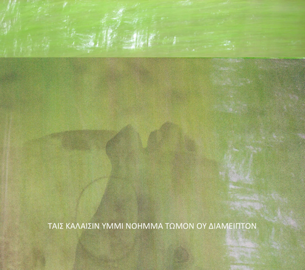

|
He wants to return to where he learned to drive, to a dirt road that masquerades as rural Georgia from some fifty years ago.
Now and then in sudden clearings, long cascading manes are swept along with the windy grasses, the sparkle of gnat-wings piercing their withers' evening auras. "I like it here," he says, and by this I know he's pulled at the 'root of the root,' has learned that certain places have a knack for laying claim to us, and we to them, however subtly they deign to touch us from a comfortable distance.
Two ravens fly wing-to-wing
a child's height above the gravel
into a grove's enclosing night,
calling as if in answer
to a standing invitation.
Over the greening field
one girl, one horse, one being
. . . and leaning
against a fencepost, Castor
with grass in his teeth.
Beside the listing hearth
a homestead once surrounded,
newborn cries & eulogies
have finally mastered flowering
in white azaleas.

“ . . . of you, beautiful ones, my thought remains
immutable . . .”
Sappho of Lesbos |
|